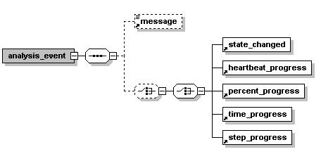

Daily bread of every developer is an API. Soaplab2 API, including those classes and interfaces that are supposed to be extended, enhanced or re-implemented, are generated here.
ant docs
Many features in Soaplab2 are configurable by Java properties. When developing, you should be aware of the singleton class Config that provides access to all Soaplab2 properties and also defines their names. Because Soaplab2 configuration is equally important for Soaplab2 service providers, the Configuration Guide with all details is included in their documentation section.
The Soaplab2 design is driven by the idea of being flexible and extensible. Therefore, the core of the Soaplab2 architecture are the plug-in mechanisms:
The Soaplab2 uses this mechanism to add behaviour shared by all Soaplab2 services (in contrast to the second mechanism, see below, that allows to add specific behaviour per service base). Here is a list of the available SPI plug-in hooks (described below in details):
The usage of the SPI plug-ins is straightforward:
Write your own implementation of a selected interface and put the name of such class into this file (each class name on a separate line). For example, the persistent storage file may have this content:
org.soaplab.services.storage.FileStorage
org.soaplab.services.storage.DBStorage
Which means that there are two mechanisms how and where to
store Soaplab2 results: one is a local file system (implemented by the
class org.soaplab.services.storage.FileStorage) and the
second one stores results in a database (implemented by the class
org.soaplab.services.storage.DBStorage).
ant config
It creates a jar file services-config.jar in the
build/lib directory. When this jar file - and, of course,
your own implementation class - are found on the CLASSPATH, your
plug-in starts to work. There are few properties that can be set to influence this Ant task (but usually there is no need to change them):
There are the following uses for this kind of plug-in mechanism (again, the details below):
A Job represents a single service invocation (such as running an analysis tool, or fetching a web page). The whole Soaplab2 infrastructure (including accessing service metadata, storing and retrieving results to and from various persistent storages, and sending events about jobs) is the same for all Soaplab2 services - but Jobs are specific. Some of them can start local tools (aka AppLab in previous Soaplab), some of them can fetch web pages (Gowlab), and some of them can, for example, just start a local Java class to do some computation.
Therefore, anytime you consider an extension to Soaplab2, you should think in terms of a new implementation of a Job interface.
Each service needs to know what class should be instantiated when a request to create a job comes. Some Job classes can represent the whole family of services (for example, all services invoking a command-line analysis tool use the same Job class for it - in this case it is the org.soaplab.services.cmdline.CmdLineJob), some Job classes are specific for one or only few services (for example, there could be a specific Job exploring Google search API). Depending on the Job scope, the Job class name can be specified directly in the service metadata, or in metadata containing list of available services. Details in metadata guide.
The Job interface (that all Job classes must implement) is defined in org.soaplab.services.Job. The best way how to implement a new Job type is to inherit from the org.soaplab.services.AbstractJob class.
More about it below.
More about it below.
More about it below.
So far, we described how to name a class in service metadata. But there is also one other place where to name a class: a place that is dictated by the used protocol.
All web applications (and the Web Services are just kinds of web applications) are "servlets" and they require to specify what class should be instantiated when a request for a particular web application comes to a servlet container (such as the Apache Tomcat server). Different Java toolkits for Web Services require to specify it in different places. For example, the JAX-WS toolkit uses configuration files web.xml and sun-jaxws.xml. Or, the old Axis 1 needs it in server-config.wsdd file.
In Soaplab2, creating or changing these files is part of the service deployment, and therefore, it is described in the documentation for service providers. Few details are also mentioned below, in the section What to do in order to add a new protocol.
The yellow boxes are places where the SPI mechanism looks for plug-ins. (There is one more SPI place that is not shown here - because of clarity - the EventDeserializer interface.)
The khaki boxes show implementation classes discovered by the SPI mechanism. These are, therefore, the real plug-ins. The picture shows only those that are distributed as a part of the Soaplab2 package - but they may be others, from other projects (after all, that's why it is called a plug-in mechanism, isn't it).
The cyan boxes are the core of extending by "naming a class". The focus points here are interfaces AnalysisService and AnalysisListService - they represents what the end-users (Soaplab2 clients) really see, and what functionality they may expect from Soaplab2. They are instantiated by the "Protocol layer": depending on the protocol used, they can handle different Web Service protocols.
The Job interface is the place where the major work happens. For example, there is a class (inheriting from the AbstractJob) representing command-line tools (aka AppLab), and another class representing not-that-old Gowlab.
The requests from clients come using a particular protocol. Because Soaplab2 was designed to be primarily a Web service, the usual protocol is SOAP/HTTP. But even this protocol can be supported by various Java toolkits, such as JAX-WS or Apache Axis. Also, other protocols can be added without changing the rest of the picture (HTML REST jumps into mind first). There are few things dependent on the chosen protocol (e.g. how to find under which name a service was invoked, what is the service name that the client used) - those are accessible through the org.soaplab.services.protocol.ProtocolToolkit interface. Therefore, each Soaplab2 service is represented by a class implementing the org.soaplab.share.Analysis interface and the org.soaplab.services.protocol.ProtocolToolkit interface.
What to do in order to add a new protocol?
First, you need a class that understands how to interpret (read, un-marshal) incoming requests, and how to create (write, marshal) results, both complying with the chosen protocol. This class also needs to provide all functionality defined in the org.soaplab.share.Analysis interface.
The usual way to achieve this is to sub-class the class org.soaplab.services.AnalysisService. An example of that can be found in org.soaplab.services.protocol.jaxws.AnalysisService, a class used for the JAX-WS toolkit. Another example (using rather delegation pattern than a direct inheritance) is in org.soaplab.services.protocol.axis1.AnalysisService.
Second, you need to deploy your new class (or classes) in order to be recognised by your Web server. Which usually mean to specify your class name in some, protocol/toolkit specific configuration file. Soaplab2 provides support for JAX-WS and, for backward compatibility with Soaplab1, the old Apache Axis. Both protocols have own Ant task that does the deployment:
ant jaxdeploy ant axis1deployMore details about deployment is in the section for service providers.
What is actually available to the clients?
Soaplab2 core functionality can be expressed by two interfaces: the Analysis interface and the AnalysisList interface. The former one can be also extended by type-safe interface of so-called derived services (not yet implemented, not shown in the picture).
The AnalysisList interface is implemented by the AnalysisListService class (or by its sub-classes, depending on which protocol is used) which uses an AnalysisInventoryProvider to get a list of provided services. The inventory provider relies on the SPI mechanism to get one or more lists (it merges them together). The default provider reads the lists of available services from XML files. An explanation how to add your own list, possibly in another format, is below.
The AnalysisService class uses the same lists each time a service request comes in order to check whether such service is still available. It allows to add or remove new services on-the-fly, without restarting your servlet engine. Just by editing the XML file with a list of available services makes it happen.
Each service needs metadata. It accesses them using the MetadataAccessor interface. A default implementation of this interface is the class org.soaplab.services.metadata.MetadataAccessorXML that reads it, as the name suggests, from the XML files. Instances of this class are created by the factory, and this factory can be replaced by the SPI plug-in. Details how to make a service reading its metadata from a different source are below.
Jobs - The main raison d'etre of each service
When a service gets a request to really do something (like starting a command-line analysis, fetching a web page, or submitting a task to a grid infrastructure) it asks JobManager to create an instance of a Job. Some related requests share, however, the same Job instance (typically, for example, one invocation of a command-line analysis is one Job, but it can contain more requests, such as starting the job, asking for its status, and requesting its results).
For each job, the job manager creates a Reporter, an inter-mediator between jobs and their results and states, and an EventManager, another inter-mediator connecting job events with their listeners.
The ultimate worker, however, is the Job. Each service can have its own class implementing the Job interface, but usually a whole group of services use the same Job class. The name of this class is taken from service metadata, or from service list metadata (it is called there a module - which should not be confused with service category that rather classifies services semantically).
Soaplab2 provides a convenient parent for Jobs, an AbstractJob, or - for jobs dealing with command-line tools - a CmdLineJob. These classes do most of the job, except the run method. They should be sub-classed whenever implementing a new Job.
Once again: writing a Job implementation is the most powerful way how to extend Soaplab2. All the SPI plug-ins and other classes are here to allow tweaking but new Jobs really do new things.
And the rest...
Remaining pieces of Soaplab2 infrastructure take care about storing persistently analysis results (see below the SPI PersistentStorage plug-in) and about propagating job events to interested listeners (see below the SPI EventListener plug-in).
It is not, however, needed for cases when a list of services is split across more than one file - such case can be already handled by the org.soaplab.services.DefaultAnalysisInventory class. This class reads list of available analyses (services) from an XML file whose name is given in a property applist (see more about configuration properties in the Configuration Guide). The applist property, can actually contain more than one file name (or, the same property can be used several times, with several different file names).
Therefore, use this SPI plug-in, and create your own class implementing the org.soaplab.services.AnalysisInventory interface, when you have a list of services in a different format, or if you wish to keep it in a different kind of storage (such as a database).
The AnalysisInventory interface allows to identify each list by adding a (reasonably) unique identifier to it, called a list authority. If not empty, the list authority becomes part of the service name.
Standard format of an analysis list
The class org.soaplab.services.DefaultAnalysisInventory understands lists in XML format that follow the SoaplabList.dtd where:
If it is missing, the module attribute is looked for in the individual service metadata. If neither there can be found, the default synonym sowa is used.
An example of such list is in <soaplab-home>/metadata/DefaultApplications.xml.
The SPI plug-in mechanism is usually used to bring together more classes implementing the given interface. In this case, however, only one class is used (and if there are more found only the first one is used). This class is a factory, implementing interface MetadataAccessorFactory with only one method - getInstance(String serviceName) - that returns a metadata accessor for the given service.
The default implementation is class org.soaplab.services.metadata.DefaultMetadataAccessorFactory that finds service metadata in the service list (see the xml attribute in the standard list format), or in the configuration properties "metadata.dir" and/or ".metadata.file" (see details in Configuration guide). In fact, this class just delegates the task to the MetadataAccessorXML but that is only an implementation detail.
There are two mechanisms how to deliver such notifications: client-pull or server-push. They differ in a way how the events are being exchanged but both share the same format of the events themselves.
From the Soaplab2 infrastructure perspective, both delivery and - up to certain extent - format of events are hidden in individual event listeners. An Event Listener is a class implementing the EventListener interface. Any number of such listeners can be added using the SPI plug-in mechanism. (There are, for example, plans to have a listener in the Soaplab2 GUI - called Dashboard - that will display events coming from all jobs as HTML pages.)
If you implement your own event listener you decide which events to listen to. The interface assumes several default event types (of course, you are free to ignore any of them) - but they can be extended. If you do so, you also need to write a class that can convert these new events from their XML representation back to their Java instances. Such deserializer is added to the system by another SPI plug-in point - an interface EventDeserializer (this plug-in is not shown in the Architecture picture above). Where is then event serializer? Well, it is part of the EventListener interface - see there method toXML().
Existing event types
 The picture is taken from the standard Life Sciences Analysis Engine specification which Soaplab2 follows. Only the names of Java classes representing individual events are more Java-like (e.g. the main event is the class AnalysisEvent).
The XML representation of the events follows the AnalysisEvent.dtd.
The details of individual events are described in their API.
You can see (static) examples of all standard events by running:
build/run/run-any-client org.soaplab.services.testing.TestEvents
The default event listener provided by Soaplab2 is class org.soaplab.services.events.DefaultEventListener that simply records events into a log file. For example:
2006-11-15 19:45:18,555 641 [main] DEBUG EventListener - [grid.helloworld]-576da760.10eed26e2d1.-8000 UNKNOWN --> CREATED 2006-11-15 19:45:18,604 690 [main] DEBUG EventListener - [grid.helloworld]-576da760.10eed26e2d1.-8000 CREATED --> RUNNING 2006-11-15 19:45:18,609 695 [main] DEBUG EventListener - [grid.helloworld]-576da760.10eed26e2d1.-8000 RUNNING --> COMPLETEDThe Configuration Guide has some details how it can be configured.
The default storage is in a local file system, implementing by the class org.soaplab.services.storage.FileStorage. A database storage is going to be added soon.
The existing contents and cleaning can be done by a command-line program ExploreStorage. For details, see Administration Tools, or start the on-line help by typing:
build/run/run-any-client org.soaplab.admin.ExploreStorage -help
The best practise is to extend an existing class rather than develop from the scratch. See examples below.
A full example of such class-based plug-in is a Job that submits tasks to a computational grid. It is represented by the class org.bioinfogrid.services.GridJob. This project is in a separate CVS module bioinfogrid-plugin (in the same repository as Soaplab2, at SourceForge).
When writing a new Job implementation, consider to inherit either from the AbstractJob or from the CmdLineJob.
ant test-junitThe tests included in this junit testing task are all Java sources defined in the directory tree within src/test/java/ that contain "Test" in their names.
The test-junit task compiles test classes and run the tests. The tests reports are stored in the directory test-reports.
Soaplab2 uses junit version 4 (and above). The corresponding junit.jar is downloaded by usual maven procedure (as any other dependencies) and stored in your local maven repository. However, it may not be (yet) visible to the testing tasks. If that happens, the following message (and instructions what to do) are being displayed:
ant test-junit
...
junit-present:
[echo]
[echo] ================================= WARNING ================================
[echo] Junit library is not present in a correct directory. Tests not executed.
[echo] The library (junit.jar) is, however, in your local Maven repository.
[echo] Therefore:
[echo] Put it in your ${ANT_HOME}/lib directory.
[echo] Or, put in your ${HOME}/.ant/lib directory.
[echo] Or start ant with -lib <your junit library>.
[echo] ==========================================================================
[echo]
Sometimes it is more convenient to run only some tests (because the
other tests may take too long). It can be done by compiling first the
test classes (by the Ant's task compile-tests) and running a
script with the name of the class containing the wanted tests. For
example:
ant compile-tests build/run/run-junit-test org.soaplab.clients.RepeatabilityTests JUnit version 4.3.1 . Time: 1.352 OK (1 test)